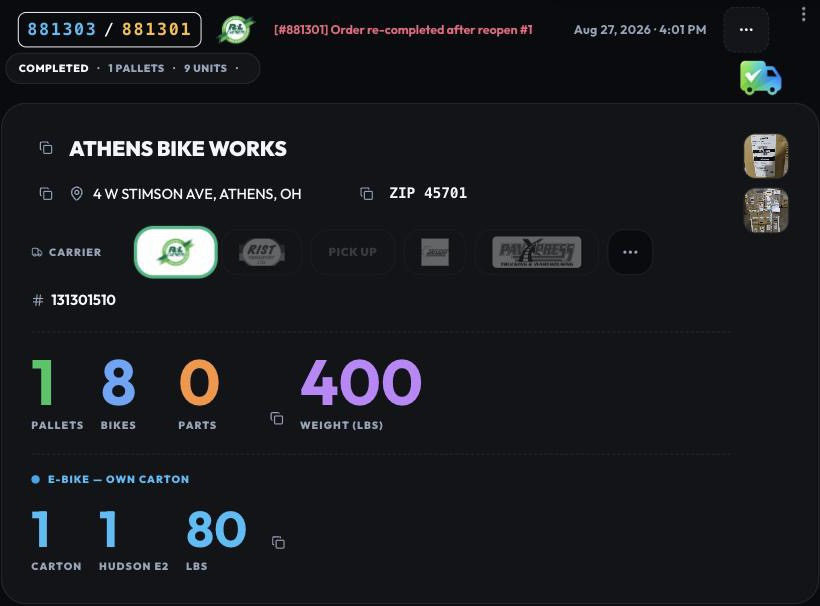
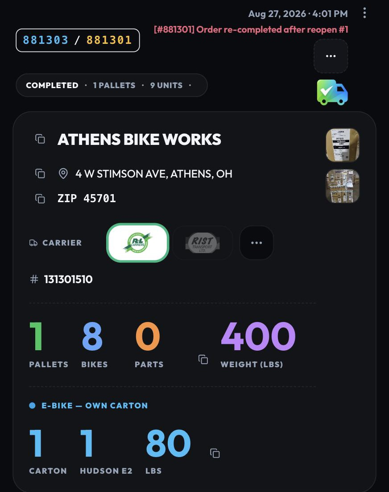
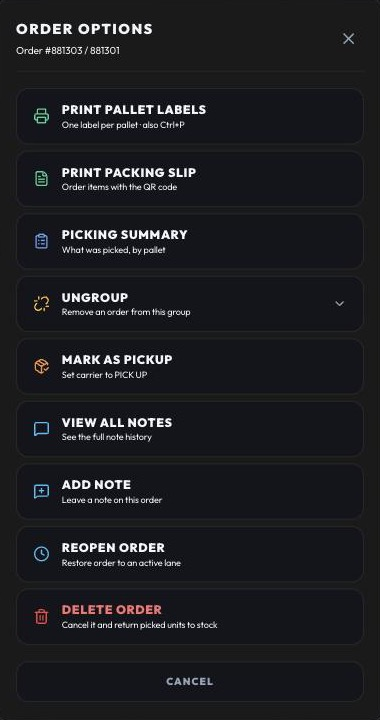
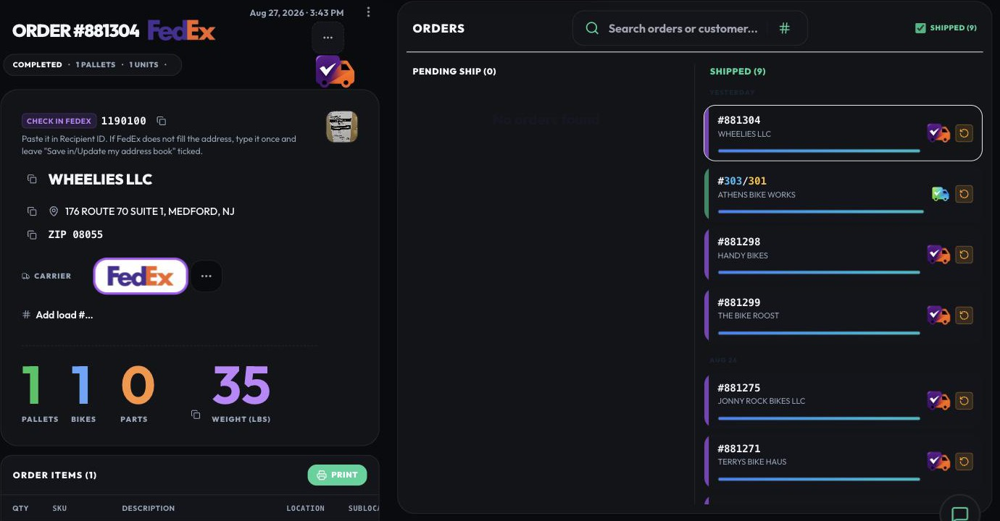
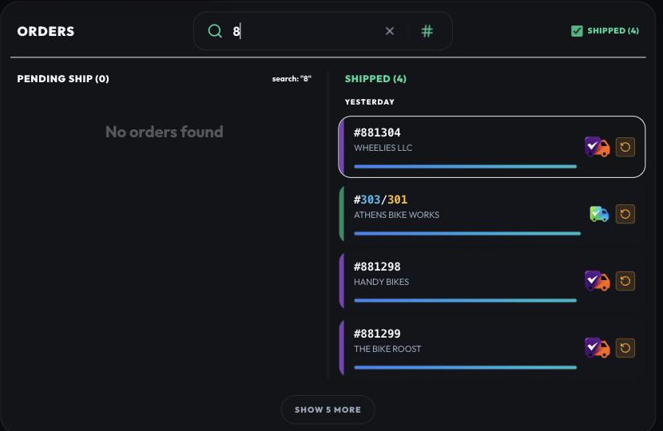

Friday, August 28, 2026 · everything since the August 27 update · for everyone on the Ludlow floor
The short version
1. Ship: the order card was laid out again from Rafael's own drawing — address on one line, photos down the right, every button in the … menu, and Print pallet labels is the first thing in that menu.
2. Ship: the Shipped column always shows the last 10 and opens the latest one; search brings 5 at a time instead of 500.
3. Ship: the lithium and PAV-zone banners are now one pulsing pill — Lithium, PAV zone, or 2 alerts — that opens on a tap.
What you will notice
1. Ship — the card, rebuilt from the floor's own layout
BeforeWith the Shipped column off the card had 60 % of the screen and used it like a phone: everything stacked in one narrow column, the address broken over two lines by the photo thumbnails beside it, three big buttons at the bottom, a blue Combined Order box repeating what the header says, and the pallet labels printable only by knowing Ctrl+P.
NowRafael dragged the real pieces of the card into place on a layout board — one version for the phone, one for the 60 % screen — and the card is built exactly that way. Nothing new to learn: the same numbers, the same copy buttons, in the places he put them.
Where
Now
Header
One line: the full order numbers, carrier logo, the note, the date, and the photo tile. Tap the note and the whole note history opens.
Address
Street and city on one line, ZIP right beside it — each with its copy button. On a phone the ZIP drops under it.
Carrier
Label, carriers and the load # on one line, all at the height of the carrier chips; when Daylight is the carrier, the "text the dispatcher" reminder sits on that same line.
Photos
A strip down the right edge, one thumbnail per photo — as many as there are. The tile in the header takes another or opens them all.
… menu
Print pallet labels first (the most used; Ctrl+P still works), then Print packing slip, Picking Summary, Edit, Notes, Combine / Split / Uncombine, the lithium label manual on FedEx orders, Reopen, and Delete last.
Lithium banner
FedEx orders only — on a truck order the e-bike row under the numbers is the declaration.

Live on August 28, order 881303 / 881301 with the Shipped column off: the header on one line with the full numbers, the note, the date and the photo tile; the address and ZIP together; the carrier row with its label, the carriers that fit and the load # at the end of it; the four numbers and the e-bike row; the two pallet photos down the right edge.

The same order on a phone, from Rafael's second drawing: the photos keep their column, the ZIP drops under the address, and the carrier row shows the chosen carrier plus ….

Left: the … menu on order 881303 / 881301 — Print pallet labels first, Delete last; Split, Uncombine and the lithium manual appear only on the orders they apply to. Right: the same order on August 27, before — one narrow column, buttons at the bottom, the Combined Order box.
2. Ship — the Shipped column is never empty, and search is light
BeforeThe Shipped column only showed orders shipped today — since July. First thing in the morning it was empty, nothing was selected, and the last order shipped the day before was one search away. And that search was heavy: typing a single "8" pulled up to 500 orders.
NowThe column always holds the last 10 shipped, grouped by day (Today / Yesterday / the date), and with nothing pending the most recently shipped order opens by itself. Search brings the five newest matches and a Show 5 more button — and an exact order number is always found, however old.


Left: Ship first thing on August 28 — nothing pending, the Shipped column lists Yesterday and Aug 26, and 881304 is already open. Right: typing 8 brings the five newest matches (881303 / 881301 count as one) and Show 5 more; before, the same keystroke fetched 500 orders.
3. Ship — alerts in one pill
Instead of full-size banners stacked on the card, one small pulsing pill at the right of the customer name says what there is — Lithium on a FedEx order with an e-bike, PAV zone on a truck order outside PAV's area, or 2 alerts — and a tap opens the instructions. The Daylight "text the dispatcher" reminder stays where it is, in the carrier row.
Mentioned only, so you know it happened
The layout board itself (every piece of the card draggable, no padding, group and split) stays around for the next screen that needs rearranging.
Coming up
Ship: one pulsing button for the lithium / carton alerts instead of banners (waiting on wording).
Opening a completed order from the Board goes straight to its Picking Summary.
Assist mode in Double Check: two people on one multi-pallet order.
PickD · August 28, 2026 · Questions: Rafael · Menu → What's new to print this page